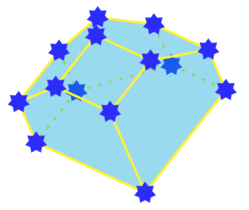

It is sometimes very helpful to draw 3-dimensional polytope in a paper. TikZ is a very versatile tool to draw in scientific documents and Sage can deal easily with 3-dimensional polytopes. Finally sagetex makes everything work together nicely between Sage, tikz and latex. Since version 6.3 of Sage, there is a function for (projection of) polytopes to output a TikZ picture of the polytope. This short tutorial shows how it all works. Since version 9.2 of Sage it became even easier!
To put an image of a 3d-polytope in latex using TikZ and Sage, simply follow the instructions:
- Install Sage 9.2 or higher
- Install SageTex (optionnal but recommended!)
- Put \usepackage{tikz} in the preamble of your article
- Open Sage and change the directory to your article's by the command cd /path/to/article
- Input your polytope, called P, to Sage
- Visualize the polytope P using the command P.show(aspect_ratio=1)
- This will open an interactive view in your default browser, where you can rotate the polytope.
- Once the desired view angle is found, click on the information icon in the lower right-hand corner and select Get Viewpoint. This will copy a string of the form ‘[x,y,z],angle’ to your local clipboard.
- Go back to Sage and type Img = P.tikz([x,y,z],angle). You can paste the string here to save some typing.
- Img contains a Sage object of type LatexExpr containing the raw tikz picture of your polytope
Then, you can either copy-paste it to your article by typing Img in Sage or save it to a file, by doing
f=open('Img_poly.tex','w')
f.write(Img)
f.close()
Then in the pwd (present working directory of sage, the one of your article) you will have a file named Img_poly.tex containing the tikzpicture of your polytope
You can customize the polytope using the following options in the command P.tikz()
- scale : positive number to scale the polytope
- edge_color : string (default: blue!95!black) representing colors which tikz recognize
- facet_color : string (default: blue!95!black) representing colors which tikz recognize
- vertex_color : string (default: green) representing colors which tikz recognize
- opacity : real number (default: 0.8) between 0 and 1 giving the opacity of the front facets.
- axis : Boolean (default: False) draw the axes at the origin or not.
Example
Let's say I want to draw the polar dual of the following (nice!) polytope given by the following list of vertices:
[[1,0,1],[1,0,0],[1,1,0],[0,0,-1],[0,1,0],[-1,0,0],[0,1,1],[0,0,1],[0,-1,0]]
In Sage, I type:
P = Polyhedron(vertices=[[1,0,1],[1,0,0],[1,1,0],[0,0,-1],[0,1,0],[-1,0,0],[0,1,1],[0,0,1],[0,-1,0]]).polar()
Then, I visualize the polytope by typing P.show(aspect_ratio=1)
When I found a good angle, I follow the above procedure to obtain the values [674,108,-731] and angle=112
The image corresponding to the code Img = P.tikz([674,108,-731],112) is
Then, I may want to customize using the command
Img = P.tikz([674,108,-731],112,scale=2, edge_color='orange',facet_color='red',vertex_color='blue',opacity=0.4)
which gives the image (the scaling difference do not appear here)
Further, I may want to edit deeper the style of the polytope inside the tikzpicture. For example, line 6-9 in the tikzpicture reads:
back/.style={loosely dotted, thin},
edge/.style={color=orange, thick},
facet/.style={fill=red,fill opacity=0.400000},
vertex/.style={inner sep=1pt,circle,draw=blue!25!black,fill=blue!75!black,thick,anchor=base}]
I can replace it by the following 4 lines (and adding \usetikzlibrary{shapes} in the preamble)
back/.style={loosely dashed,line width=2pt},
edge/.style={color=yellow, line width=2pt},
facet/.style={fill=cyan,fill opacity=0.400000},
vertex/.style={inner sep=4pt,star,star points=7,draw=blue!75!white,fill=blue!85!white,thick,anchor=base}]
to give
Finally, you may want to tweak your picture my adding labels, elements on vertices, edges, facets, etc. Possibilities are unlimited with the possibilities of TikZ!
The source for the last image can be downloaded here.
Automatize using SageTex
For this you need to put
\usepackage{sagetex}
in the preamble of your article
There are different ways to use sagetex and you may create your own. Here are some possibilities.
- You can directly type in a sagestr in the article:
\sagestr{(polytopes.permutahedron(4)).projection().tikz([4,5,6],45,scale=0.75, facet_color='red',vertex_color='yellow',opacity=0.3)}
You should get
- You may create the following tex commands
\newcommand{\polytopeimg}[4]{\sagestr{(#1).projection().tikz(#2,#3,#4)}}
\newcommand{\polytopeimgopt}[9]{\sagestr{(#1).projection().tikz(#2,#3,#4,#5,#6,#7,#8,#9)}}
in your preamble and use them with a sagesilent in your article:
\begin{sagesilent}
Polytope=polytopes.great_rhombicuboctahedron()
\end{sagesilent}
\polytopeimg{Polytope}{[276,-607,-746]}{102}{1}
\polytopeimgopt{Polytope}{view=[-907,379,183]}{angle=129}{scale=2}{edge_color='red'}{facet_color='yellow'}{vertex_color='blue'}{opacity=0.6}{axis=False}
Then, run pdflatex, execute Sage on the file article_name.sagetex.sage and run pdflatex again.
You should get